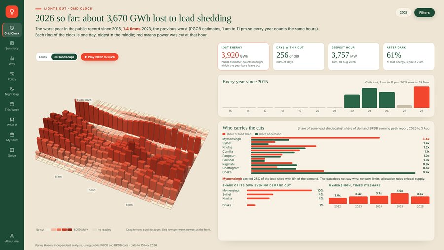
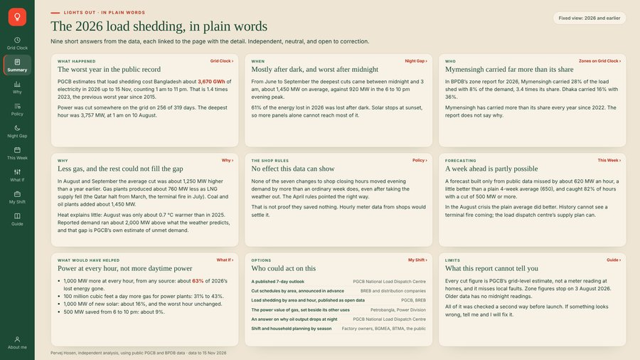
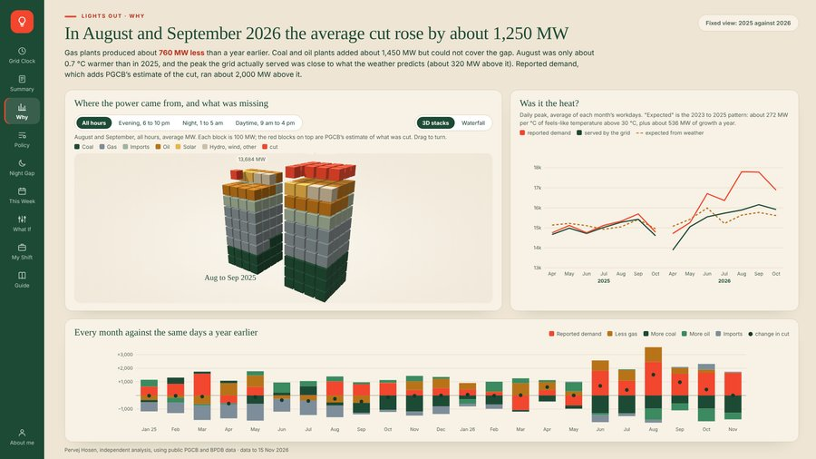
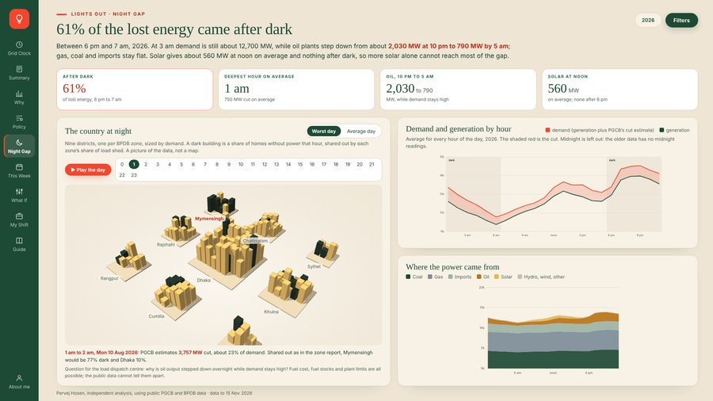

The brief
Twelve questions, each answered with a number
Different readers need different things from the same data. Before building anything I wrote down who would read this and what each of them would want answered.
For government
For industry and households
For everyone
What the data shows
Five findings
All load shed figures are PGCB's grid-level estimates. Year totals count 1 am to 11 pm because the older data has no midnight readings.
Finding 1
The worst year in the public record
About 3,670 GWh lost to 15 November, 1.4 times 2023. Power was cut somewhere on the grid on 256 of 319 days. August alone lost about 1,160 GWh.
2025 was the quiet year in between, which is why 2026 felt like such a shock.
GWh lost each year
1 am to 11 pm · hover a bar
Finding 2
The deepest cuts came after midnight
From June to September the cut averaged about 1,450 MW from midnight to 3 am, against 920 MW in the 6 to 10 pm evening peak. Solar peaked at 796 MW, and 61% of the lost energy fell after dark.
Overnight, oil plants stepped down from about 2,840 MW to 1,350 MW while demand stayed above 15,000 MW until 3 am. Why is a question only the load dispatch centre can answer.
Average cut by hour, June to September 2026
MW · red: midnight to 3 am · shaded: evening peak
Finding 3
The August crisis followed gas, not heat
In August and September the average cut rose about 1,250 MW on a year earlier. Gas plants produced about 760 MW less after the Qatar force majeure and the LNG terminal fire on 21 July. Coal and oil added about 1,450 MW and still could not close the gap.
August was only about 0.7 °C warmer than 2025, worth under 200 MW of demand.
August and September 2026 against 2025
Average change in MW · an exact identity, nothing modelled
Finding 4
Mymensingh carried far more than its share
In BPDB's zone report the Mymensingh zone carried 28% of load shed with 8% of demand, 3.4 times its share. It has carried more than its share every year since 2022. Dhaka carried 16% with 36% of demand.
The report does not say why. That is the strongest case for publishing load shedding by area.
Share of load shed vs share of demand, 2026
BPDB evening peak report, to 3 August · six of nine zones
Finding 5
The shop closing rules: no effect this data can show
None of the seven changes to shop closing hours moved evening demand beyond normal week to week swings, even with the weather taken out. The April rules pointed the expected way, about 510 MW lower.
That is not proof they saved nothing. Grid totals are too noisy for an effect this size; meter data from shops would settle it.
Change in evening demand after each rule
MW, weather taken out · shaded band: normal week to week swing
What would have helped
Power at every hour, not more daytime power
Each option applied to every real hour of 2026, as the share of lost energy it would have removed. It ignores grid limits, cost and where the fuel would come from. The report has sliders to try your own mix.
Gas converted at 3.6 to 5.7 MW per million cubic feet a day, depending on plant efficiency; the striped part is that range.
The report
Nine pages in one custom visual
Built like a small app: a side rail, a filter panel for period, season, weekday and hours, and 3D scenes drawn in WebGL that turn and pause when you point at them. It opens on the Grid Clock, a 3D landscape of every hour since 2022.




Who could use it
Options by reader
Options, not demands. Each is something the data suggests would help, with who is in a position to act.
Power Division, PGCB, Petrobangla
- Set the power value of gas beside its other uses. 100 million cubic feet a day to power plants would have removed 31 to 43% of 2026's lost energy.
- Publish a 7-day outlook. Public data alone gets part of the way; the supply plan would do the rest.
- Answer why oil output drops at night while demand stays high.
BREB and distribution companies
- Announce cut schedules by area in advance. Bad days come in runs: after a day above 1,500 MW the next was too 85% of the time.
- Publish load shedding by area and hour, as the national figures already are.
Factory managers, BGMEA, BTMA
- Plan shifts by season. The 6 am to 2 pm shift was hit least in the 2026 monsoon; the night shift most.
- Budget generator hours from the hours the report shows as risky.
Homes and shops
- Charge, pump and cook in the safer windows. Late morning was the calmest part of the day; after midnight the worst.
- Check the week ahead on the This Week page before planning anything that needs power.
How it was built
From public files to a checked report
Everything runs from scripts, so the whole report can be rebuilt when new data arrives. The analysis code, review and data pack are open on GitHub.
Collect
- PGCB hourly generation, demand and load shedding, 2015 to 2026
- Daily collection from PGCB's portal from March 2026, matched 100% to the published file
- BPDB zone reports; Open-Meteo weather for 9 cities
Model
- DuckDB bronze, silver and gold layers
- An exact bridge: cut = demand − generation, by fuel
- Weather fit of demand above 30 °C, plus a placebo test for the policy check
Forecast
- LightGBM blended with a 4-week planner's average
- Backtested on rolling origins; misses by about 620 MW an hour against 650
- An 80% range by regime and day ahead
Report
- Neon Postgres feeding Power BI
- One DAX measure hands the data to a custom visual
- SVG charts, a canvas clock and WebGL 3D scenes
Checked before it went out
Every published number was recomputed a second way, straight from the cleaned data, by a separate script: 45 checks, all passing. Then every finding went through a review for source, range, what it cannot say and neutral wording.
Limits
What this cannot tell you
- Load shed is PGCB's estimate at grid level (estimated demand minus generation). It is not a meter reading at homes and misses local faults.
- Zone figures come from BPDB's evening peak report and stop on 3 August 2026.
- Weather is ERA5 reanalysis from Open-Meteo, weighted by each zone's demand, not station data.
- The data cannot say why one zone carries more, why oil output drops at night, or whether the shop rules saved energy at the meter.
Open to correction
This is independent work on public data. If a number looks wrong, open an issue on GitHub or get in touch through the contact form and I will fix it.